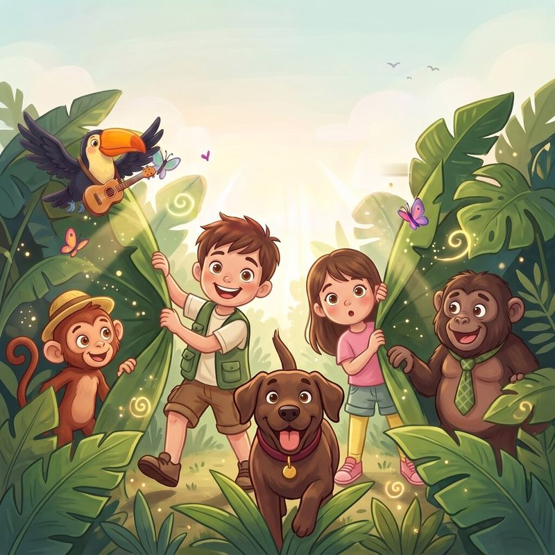

Regenwald
Das verlorene Brüllaffenlied
Ein Abenteuer hoch oben in den Baumkronen
- 15 Seiten
- ca. 12 Min. Lesezeit
- Hörgeschichte, 9 Min.
Worum es geht
Als Fiete, Lotte und Paco den brasilianischen Regenwald erkunden, hören sie plötzlich ein geheimnisvolles Brüllaffenlied. Doch dann verstummt der Ruf. Gemeinsam mit dem Tukan Kiko machen sie sich auf die Suche und entdecken, warum die Brüllaffen ihre Familie nicht mehr erreichen können. Ein spannendes Abenteuer über den Regenwald, seine Tiere und die Frage, warum es so wichtig ist, ihre Lebensräume zu schützen.
Das entdeckt dein Kind
- Warum der Regenwald ein Zuhause für viele Tiere ist
- Wie wichtig Bäume als Wege, Schutz und Lebensraum sind
- Warum wir Lebensräume schützen müssen, damit Tiere zusammenbleiben können
Die ganze Geschichte gibt es in der Aha Kids App, zum Vorlesen, zum Anhören und zum Lesen üben.